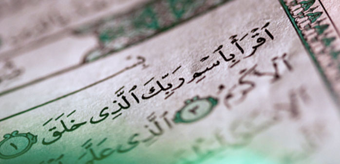
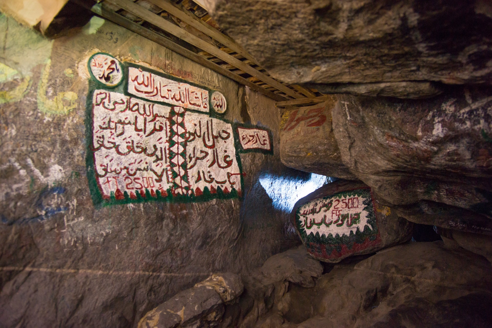

What is the Quran?
The Holy Quran is the Holy Book or the Scripture of the Muslims. It lays down for them the law and commandments, codes for their social and moral behaviour, and contains a comprehensive religious philosophy. The language of the Quran is Arabic. It is a compilation of the verbal revelations given to the Holy Prophet Muhammad(sa) over a period of twenty three years.
"Read! in the name of your lord, who has created (all that exists)."
What is the meaning of the word Quran?
Quran isn’t an English word but an Arabic one. The root word for “Quran” is Iqr’a (read, in the Arabic language). Quran is literally meaning recitation. The word meaning of the Quran also includes reading with understanding and learning.
Who revealed the Quran?
The Qur'an was revealed to Muhammad by the Angel Gabriel appearing to him in a cave on Mount Hira. The angel spoke to Muhammad and Muhammad began reciting the words from God.
Where did the Quran revealed?
the Cave of Hira Chapter 96 of the Qur'an is traditionally believed to have been Muhammad's first revelation. While on retreat in the Cave of Hira, located at Mountain Jabal al-Nour near Mecca, Angel Gabriel appears before The Islamic Prophet and commands him to "Read!"
Cave of Hira, located at Mountain Jabal al-Nour
Why is the Quran in Arabic?
the Quran was primarily revealed in Arabic because it was revealed to Muhammad peace be upon him who lived in Arabia.